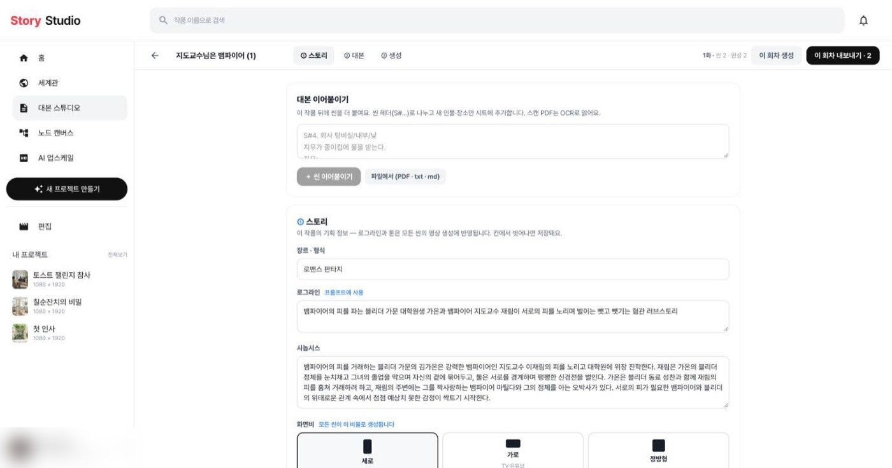
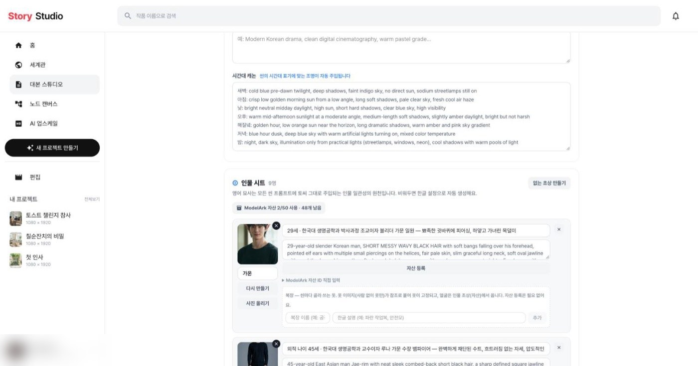
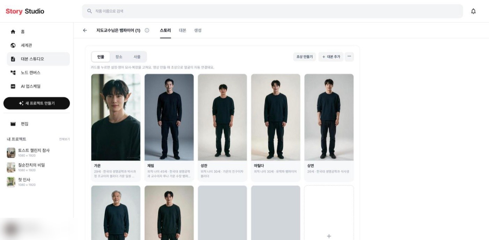

스토리 탭
작품을 열면 처음 보이는 탭
←/→ 키로도 바꿔요



- 인물부터 — 들어가자마자 인물·장소·사물 카드가 보여요. 같은 크기(세로 사진) 카드로 맞췄어요.
- 복장 — 인물 카드 아래 동그라미로 겹쳐 보여요. 카드를 누르면 설정·영어 묘사·복장을 고쳐요.
- 얼굴 등록 — ‘자산 등록’ 버튼, ‘ModelArk 자산 2/50’ 표시, 자산 ID 직접 입력을 없앴어요. 영상을 만들 때 초상으로 알아서 연결돼요.
- 대본 이어붙이기·작품 정보 — 위 칸을 차지하던 것을 오른쪽 위 ‘＋ 대본 추가’와 작품 이름 옆 ⓘ로 옮겼어요.
- 상단 버튼 — 탭 줄 오른쪽 ‘이 회차 생성 / 이 회차 내보내기’를 생성 탭 아래 바로 모았어요.